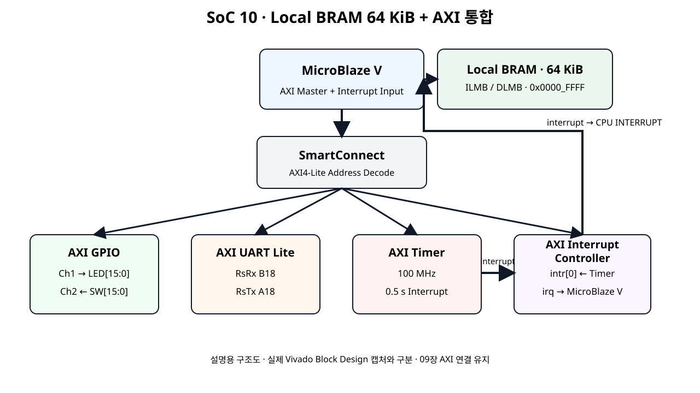
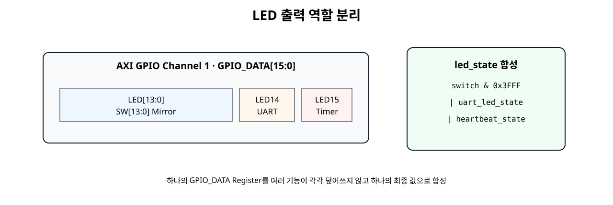
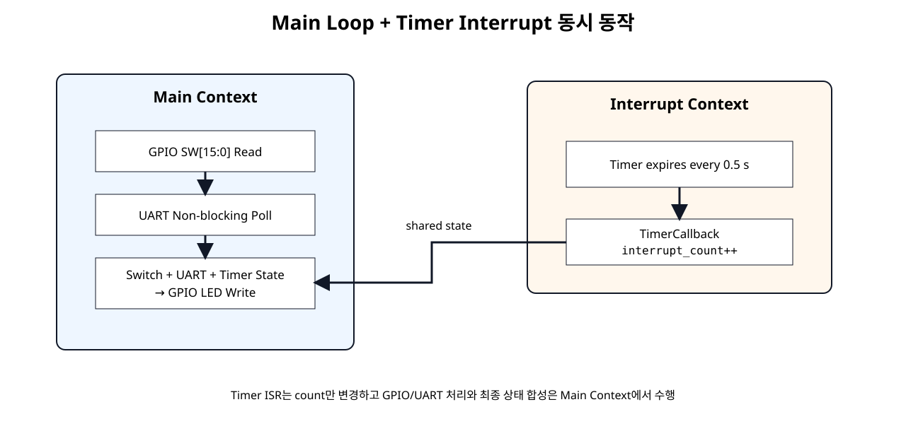

GPIO
SW[13:0] 상태를 LED[13:0]에 반영한다.
Basys3 SoC + NPU · SoC 10
SoC 06~09에서 개별 검증한 AXI GPIO, AXI UART Lite, AXI Timer, AXI Interrupt Controller를 하나의 MicroBlaze V 시스템으로 통합한다. Switch 입력, UART 명령, Timer Interrupt가 동시에 동작하면서 하나의 LED 출력 Register를 충돌 없이 공유하도록 구성한다.
SW[13:0] 상태를 LED[13:0]에 반영한다.
1/0/r/h 명령으로 LED14와 상태 확인을 제어한다.
0.5초 Interrupt Count의 홀짝으로 LED15 Heartbeat를 만든다.
이번 장은 새로운 Peripheral을 추가하는 단계가 아니라, 이미 개별적으로 동작을 확인한 네 IP가 하나의 SoC 안에서 동시에 동작하도록 만드는 단계이다.
10장은 06~09장을 실제 보드에서 각각 검증한 뒤 통합 동작을 확인하는 단계입니다. 각 앞 장이 미검증인 동안 아래 내용은 통합 실습 절차와 기대 결과입니다.

네 IP는 SmartConnect를 통해 MicroBlaze V의 Memory-Mapped AXI Master에 연결되고, Timer의 interrupt만 AXI INTC를 통해 MicroBlaze V Interrupt 입력으로 전달된다.
| IP | 기존 설정 | SoC 10 |
|---|---|---|
| AXI GPIO | Dual 16-bit · Ch1 Output · Ch2 Input | 유지 |
| AXI UART Lite | 115200 · 8 bit · No Parity | 유지 |
| AXI Timer | 32-bit · 100 MHz · 0.5 s | Interrupt 사용 |
| AXI INTC | Timer Level-High 입력 | 유지 |
| 입력 / Event | 처리 | 출력 |
|---|---|---|
| SW[13:0] | Main Loop GPIO Read | LED[13:0] |
UART 1 / 0 | Main Loop UART Polling | LED14 |
| Timer Interrupt | ISR에서 interrupt_count++ | LED15 Heartbeat |
UART r | 현재 State 읽기 | Terminal Status |
SW14와 SW15는 LED14·LED15의 별도 기능과 충돌하지 않도록 Mirror 대상에서 제외한다.
UART는 Main Loop에서 비차단 Polling한다. XUartLite_IsReceiveEmpty()가 False일 때만 1 Byte를 읽으므로 사용자가 문자를 입력하지 않아도 Switch 처리와 Timer Heartbeat가 계속 동작한다.
Callback에서는 GPIO Write나 UART 문자열 출력처럼 시간이 긴 작업을 하지 않는다.
AXI INTC는 이번 장에서도 Timer interrupt 하나만 받는다. UART는 Polling이므로 Interrupt Source 수를 늘리지 않는다.
네 AXI Peripheral은 동일한 100 MHz Clock Domain을 사용한다.
Address Editor에는 GPIO, UART Lite, Timer, INTC 네 AXI Slave Segment가 함께 나타난다. Base Address는 실제 Vivado 설계를 기준으로 사용하며 문서에 임의 값을 고정하지 않는다.
| IP | Base + Offset | Register |
|---|---|---|
| AXI GPIO | +0x00 | GPIO_DATA · LED |
| AXI GPIO | +0x08 | GPIO2_DATA · Switch |
| AXI UART Lite | +0x00 / +0x04 | RX FIFO / TX FIFO |
| AXI UART Lite | +0x08 / +0x0C | STATUS / CONTROL |
| AXI Timer | +0x00 / +0x04 / +0x08 | TCSR0 / TLR0 / TCR0 |
| AXI INTC | +0x00 ~ +0x1C | ISR ~ MER |
CPU는 표준 외부 인터럽트 모드로 설정한다. AXI INTC의 irq를 microblaze_riscv_0/Interrupt에 연결하고 입력은 Level-High로 맞춘다. MicroBlaze V의 mtvec 진입과 mepc 저장·MRET 복귀는 생성 BSP가 처리한다. Xil_ExceptionEnable()은 외부 인터럽트 허용과 전역 허용을 설정하며, ISR은 주변장치의 원인을 해제한다.

led_state로 합성한다.new_led_state =
(switch_value & SW_LED_MASK) |
uart_led_state |
heartbeat_state;각 기능이 GPIO_DATA를 따로 Write하면 마지막 Write가 앞선 값을 덮어쓴다.

| Context | 수행 작업 |
|---|---|
| ISR Callback | interrupt_count++ |
| Main Loop | Switch Read, UART Command, LED State 합성·Write |
09장 Timer Interrupt가 성공했다면 그 .xpr·XSA를 기준으로 합니다. 10장은 새 주변 IP를 추가하지 않으므로 하드웨어가 동일하면 09장 프로젝트를 유지하고 통합 Application만 새로 만드는 것이 우선입니다.
Vivado에서 09장 프로젝트를 열고 Sources → Design Sources → Open Block Design으로 실제 Diagram을 확인합니다.
axi_gpio_0가 16비트 두 채널(LED 출력·Switch 입력)인지, 외부 포트가 실제 Wrapper와 일치하는지 확인합니다.
axi_uartlite_0의 115200/8N1 설정, 실제 RX/TX 포트, Clock·Reset 연결을 확인합니다.
axi_timer_0의 interrupt 출력에서 axi_intc_0을 거쳐 CPU INTERRUPT 입력으로 연결되는지 확인합니다.
M_AXI_DP에서 SmartConnect를 통해 GPIO·UART·Timer·INTC의 S_AXI로 각각 연결되는지 확인합니다.
| Port | 방향 | 기능 |
|---|---|---|
clk | Input | 100 MHz |
btnC | Input | System Reset |
sw[15:0] | Input | AXI GPIO Channel 2 |
led[15:0] | Output | AXI GPIO Channel 1 |
RsRx | Input | PC → FPGA UART |
RsTx | Output | FPGA → PC UART |
Clock, Reset, Switch, LED, USB-UART 핀을 Digilent Basys-3-Master.xdc 기준으로 통합한다.
## Clock signal
set_property -dict { PACKAGE_PIN W5 IOSTANDARD LVCMOS33 } [get_ports clk]
create_clock -add -name sys_clk_pin -period 10.00 -waveform {0 5} [get_ports clk]
## Center Button : Reset
set_property -dict { PACKAGE_PIN U18 IOSTANDARD LVCMOS33 } [get_ports btnC]
## Basys3 Slide Switches
set_property -dict { PACKAGE_PIN V17 IOSTANDARD LVCMOS33 } [get_ports {sw[0]}]
set_property -dict { PACKAGE_PIN V16 IOSTANDARD LVCMOS33 } [get_ports {sw[1]}]
set_property -dict { PACKAGE_PIN W16 IOSTANDARD LVCMOS33 } [get_ports {sw[2]}]
set_property -dict { PACKAGE_PIN W17 IOSTANDARD LVCMOS33 } [get_ports {sw[3]}]
set_property -dict { PACKAGE_PIN W15 IOSTANDARD LVCMOS33 } [get_ports {sw[4]}]
set_property -dict { PACKAGE_PIN V15 IOSTANDARD LVCMOS33 } [get_ports {sw[5]}]
set_property -dict { PACKAGE_PIN W14 IOSTANDARD LVCMOS33 } [get_ports {sw[6]}]
set_property -dict { PACKAGE_PIN W13 IOSTANDARD LVCMOS33 } [get_ports {sw[7]}]
set_property -dict { PACKAGE_PIN V2 IOSTANDARD LVCMOS33 } [get_ports {sw[8]}]
set_property -dict { PACKAGE_PIN T3 IOSTANDARD LVCMOS33 } [get_ports {sw[9]}]
set_property -dict { PACKAGE_PIN T2 IOSTANDARD LVCMOS33 } [get_ports {sw[10]}]
set_property -dict { PACKAGE_PIN R3 IOSTANDARD LVCMOS33 } [get_ports {sw[11]}]
set_property -dict { PACKAGE_PIN W2 IOSTANDARD LVCMOS33 } [get_ports {sw[12]}]
set_property -dict { PACKAGE_PIN U1 IOSTANDARD LVCMOS33 } [get_ports {sw[13]}]
set_property -dict { PACKAGE_PIN T1 IOSTANDARD LVCMOS33 } [get_ports {sw[14]}]
set_property -dict { PACKAGE_PIN R2 IOSTANDARD LVCMOS33 } [get_ports {sw[15]}]
## Basys3 LEDs
set_property -dict { PACKAGE_PIN U16 IOSTANDARD LVCMOS33 } [get_ports {led[0]}]
set_property -dict { PACKAGE_PIN E19 IOSTANDARD LVCMOS33 } [get_ports {led[1]}]
set_property -dict { PACKAGE_PIN U19 IOSTANDARD LVCMOS33 } [get_ports {led[2]}]
set_property -dict { PACKAGE_PIN V19 IOSTANDARD LVCMOS33 } [get_ports {led[3]}]
set_property -dict { PACKAGE_PIN W18 IOSTANDARD LVCMOS33 } [get_ports {led[4]}]
set_property -dict { PACKAGE_PIN U15 IOSTANDARD LVCMOS33 } [get_ports {led[5]}]
set_property -dict { PACKAGE_PIN U14 IOSTANDARD LVCMOS33 } [get_ports {led[6]}]
set_property -dict { PACKAGE_PIN V14 IOSTANDARD LVCMOS33 } [get_ports {led[7]}]
set_property -dict { PACKAGE_PIN V13 IOSTANDARD LVCMOS33 } [get_ports {led[8]}]
set_property -dict { PACKAGE_PIN V3 IOSTANDARD LVCMOS33 } [get_ports {led[9]}]
set_property -dict { PACKAGE_PIN W3 IOSTANDARD LVCMOS33 } [get_ports {led[10]}]
set_property -dict { PACKAGE_PIN U3 IOSTANDARD LVCMOS33 } [get_ports {led[11]}]
set_property -dict { PACKAGE_PIN P3 IOSTANDARD LVCMOS33 } [get_ports {led[12]}]
set_property -dict { PACKAGE_PIN N3 IOSTANDARD LVCMOS33 } [get_ports {led[13]}]
set_property -dict { PACKAGE_PIN P1 IOSTANDARD LVCMOS33 } [get_ports {led[14]}]
set_property -dict { PACKAGE_PIN L1 IOSTANDARD LVCMOS33 } [get_ports {led[15]}]
## Basys3 USB-RS232 Interface
set_property -dict { PACKAGE_PIN B18 IOSTANDARD LVCMOS33 } [get_ports RsRx]
set_property -dict { PACKAGE_PIN A18 IOSTANDARD LVCMOS33 } [get_ports RsTx]
BD의 Address Editor에서 GPIO/UART/Timer/INTC의 네 주소 세그먼트가 09장과 동일하고, Assigned 상태이며 범위 충돌이 없는지 확인합니다.
Sources → Design Sources/Constraints에서 현재 Wrapper의 Clock·Reset·GPIO·UART 핀 이름이 Basys3 XDC와 일치하는지 확인합니다. RsRx/RsTx와 UART_0 인터페이스를 혼용하지 않습니다.
Block Design의 Validate Design(F6)을 실행합니다. 하드웨어가 09장과 같다면 새로운 Bitstream 생성은 필수 작업이 아닙니다.
기대 화면: 09장과 동일한 연결·주소가 유지되고 Validate Design 오류가 없습니다.실제로 BD 또는 제약이 변경됐다면 그 경우에만 Generate Bitstream → Export Hardware(Include bitstream)을 다시 수행합니다. 변화가 없다면 09장의 성공 Bitstream/XSA를 재사용합니다.
Vitis Workspace /home/jung/soc/sw에서 실제 09장 XSA를 기반으로 Build 성공한 Platform을 찾습니다. 하드웨어 변경이 없다면 새 Platform을 만들거나 XSA를 교체할 필요가 없습니다.
File → New Component → Application을 사용해 통합 프로그램을 별도로 생성합니다. 이름 예시는 soc10_integration이며 기존 07·08·09장 Application은 유지합니다.
09장과 동일한 microblaze_riscv_0 standalone Domain을 선택합니다. xparameters.h에서 GPIO, UART Lite, Timer, INTC의 매크로와 실제 주소를 확인합니다.
20절의 통합 main.c를 새 Application의 소스로 넣습니다. 기존 템플릿의 중복 main()은 제외하고 Build하여 ELF가 생성됐는지 확인합니다.
아래 코드는 SoC 10 통합 실습을 위해 작성한 교육용 코드이다. GPIO Driver, UART Lite Low-Level API, Timer Interrupt Example의 현재 AMD API 구조를 조합했다.
#include "xparameters.h"
#include "xgpio.h"
#include "xuartlite_l.h"
#include "xtmrctr.h"
#include "xstatus.h"
#include "xil_types.h"
#include "xil_exception.h"
#ifdef SDT
#include "xinterrupt_wrap.h"
#else
#include "xintc.h"
#endif
/*
* SoC 10 - MicroBlaze V + GPIO + UART + Timer + AXI INTC Integration
*
* GPIO Channel 1 : LED[15:0] output
* GPIO Channel 2 : SW[15:0] input
*
* LED ownership:
* LED[13:0] : SW[13:0] mirror
* LED14 : UART command control ('1' = ON, '0' = OFF)
* LED15 : Timer interrupt heartbeat
*
* UART : Polling, 115200 8N1
* Timer: 100 MHz, 0.5 s interval, Down Count + Auto Reload + Interrupt
* IRQ : AXI Timer -> AXI INTC -> MicroBlaze V
*/
#define GPIO_LED_CHANNEL 1U
#define GPIO_SW_CHANNEL 2U
#define SW_LED_MASK 0x00003FFFU
#define UART_LED_MASK 0x00004000U
#define HEARTBEAT_LED_MASK 0x00008000U
#define TIMER0 0U
#define TIMER_TICKS_500MS 50000000U
#define TIMER_RESET_VALUE (TIMER_TICKS_500MS - 2U)
#ifndef SDT
#define GPIO_DEVICE_ID XPAR_GPIO_0_DEVICE_ID
#define TIMER_DEVICE_ID XPAR_TMRCTR_0_DEVICE_ID
#define INTC_DEVICE_ID XPAR_INTC_0_DEVICE_ID
#define TIMER_INTERRUPT_ID XPAR_INTC_0_TMRCTR_0_VEC_ID
#define UART_BASEADDR XPAR_UARTLITE_0_BASEADDR
#else
#define GPIO_BASEADDR XPAR_XGPIO_0_BASEADDR
#define TIMER_BASEADDR XPAR_XTMRCTR_0_BASEADDR
#define UART_BASEADDR XPAR_XUARTLITE_0_BASEADDR
#endif
static XGpio Gpio;
static XTmrCtr Timer;
#ifndef SDT
static XIntc Intc;
#endif
volatile u32 interrupt_count = 0U;
volatile u32 switch_value = 0U;
volatile u32 led_state = 0U;
volatile u8 last_uart_rx = 0U;
static u32 uart_led_state = 0U;
static void UartPutChar(u8 ch)
{
XUartLite_SendByte(UART_BASEADDR, ch);
}
static void UartPutString(const char *text)
{
while (*text != '\0') {
UartPutChar((u8)*text);
text++;
}
}
static void UartPutHexNibble(u8 value)
{
value &= 0x0FU;
if (value < 10U) {
UartPutChar((u8)('0' + value));
} else {
UartPutChar((u8)('A' + (value - 10U)));
}
}
static void UartPutHex16(u16 value)
{
int shift;
for (shift = 12; shift >= 0; shift -= 4) {
UartPutHexNibble((u8)(value >> shift));
}
}
static void UartPutHex32(u32 value)
{
int shift;
for (shift = 28; shift >= 0; shift -= 4) {
UartPutHexNibble((u8)(value >> shift));
}
}
static void PrintHelp(void)
{
UartPutString("\r\nCommands\r\n");
UartPutString(" 1 : LED14 ON\r\n");
UartPutString(" 0 : LED14 OFF\r\n");
UartPutString(" r : Read status\r\n");
UartPutString(" h : Help\r\n");
}
static void PrintStatus(void)
{
UartPutString("\r\nSW=0x");
UartPutHex16((u16)switch_value);
UartPutString(" LED=0x");
UartPutHex16((u16)led_state);
UartPutString(" IRQ=0x");
UartPutHex32(interrupt_count);
UartPutString("\r\n");
}
static void TimerCallback(void *CallBackRef, u8 TmrCtrNumber)
{
(void)CallBackRef;
(void)TmrCtrNumber;
interrupt_count++;
}
static int InitGpio(void)
{
#ifndef SDT
return XGpio_Initialize(&Gpio, GPIO_DEVICE_ID);
#else
return XGpio_Initialize(&Gpio, GPIO_BASEADDR);
#endif
}
static int InitTimer(void)
{
int status;
#ifndef SDT
status = XTmrCtr_Initialize(&Timer, TIMER_DEVICE_ID);
#else
status = XTmrCtr_Initialize(&Timer, TIMER_BASEADDR);
#endif
if (status != XST_SUCCESS) {
return XST_FAILURE;
}
status = XTmrCtr_SelfTest(&Timer, TIMER0);
if (status != XST_SUCCESS) {
return XST_FAILURE;
}
XTmrCtr_SetHandler(&Timer, TimerCallback, &Timer);
XTmrCtr_SetOptions(
&Timer,
TIMER0,
XTC_DOWN_COUNT_OPTION |
XTC_AUTO_RELOAD_OPTION |
XTC_INT_MODE_OPTION
);
XTmrCtr_SetResetValue(&Timer, TIMER0, TIMER_RESET_VALUE);
return XST_SUCCESS;
}
static int SetupInterruptSystem(void)
{
int status;
#ifndef SDT
status = XIntc_Initialize(&Intc, INTC_DEVICE_ID);
if (status != XST_SUCCESS) {
return XST_FAILURE;
}
status = XIntc_Connect(
&Intc,
TIMER_INTERRUPT_ID,
(XInterruptHandler)XTmrCtr_InterruptHandler,
(void *)&Timer
);
if (status != XST_SUCCESS) {
return XST_FAILURE;
}
status = XIntc_Start(&Intc, XIN_REAL_MODE);
if (status != XST_SUCCESS) {
return XST_FAILURE;
}
XIntc_Enable(&Intc, TIMER_INTERRUPT_ID);
Xil_ExceptionInit();
Xil_ExceptionRegisterHandler(
XIL_EXCEPTION_ID_INT,
(Xil_ExceptionHandler)XIntc_InterruptHandler,
&Intc
);
Xil_ExceptionEnable();
#else
status = XSetupInterruptSystem(
&Timer,
(XInterruptHandler)XTmrCtr_InterruptHandler,
Timer.Config.IntrId,
Timer.Config.IntrParent,
XINTERRUPT_DEFAULT_PRIORITY
);
if (status != XST_SUCCESS) {
return XST_FAILURE;
}
#endif
return XST_SUCCESS;
}
static void InitUart(void)
{
/* RX/TX FIFO clear. UART interrupt remains disabled. */
XUartLite_WriteReg(
UART_BASEADDR,
XUL_CONTROL_REG_OFFSET,
0x03U
);
}
static void HandleUartCommand(void)
{
if (XUartLite_IsReceiveEmpty(UART_BASEADDR)) {
return;
}
last_uart_rx = XUartLite_RecvByte(UART_BASEADDR);
switch (last_uart_rx) {
case '1':
uart_led_state = UART_LED_MASK;
UartPutString("\r\nLED14=ON\r\n");
break;
case '0':
uart_led_state = 0U;
UartPutString("\r\nLED14=OFF\r\n");
break;
case 'r':
case 'R':
PrintStatus();
break;
case 'h':
case 'H':
PrintHelp();
break;
case '\r':
case '\n':
break;
default:
UartPutString("\r\nUnknown command. Press h.\r\n");
break;
}
}
static void UpdateLedOutput(void)
{
u32 new_led_state;
u32 heartbeat_state;
if ((interrupt_count & 1U) != 0U) {
heartbeat_state = HEARTBEAT_LED_MASK;
} else {
heartbeat_state = 0U;
}
new_led_state =
(switch_value & SW_LED_MASK) |
uart_led_state |
heartbeat_state;
if (new_led_state != led_state) {
led_state = new_led_state;
XGpio_DiscreteWrite(
&Gpio,
GPIO_LED_CHANNEL,
led_state
);
}
}
int main(void)
{
int status;
status = InitGpio();
if (status != XST_SUCCESS) {
return XST_FAILURE;
}
InitUart();
status = InitTimer();
if (status != XST_SUCCESS) {
return XST_FAILURE;
}
status = SetupInterruptSystem();
if (status != XST_SUCCESS) {
return XST_FAILURE;
}
led_state = 0U;
XGpio_DiscreteWrite(&Gpio, GPIO_LED_CHANNEL, led_state);
UartPutString("\r\nSoC 10 Integrated System Ready\r\n");
PrintHelp();
XTmrCtr_Start(&Timer, TIMER0);
while (1) {
switch_value = XGpio_DiscreteRead(
&Gpio,
GPIO_SW_CHANNEL
);
HandleUartCommand();
UpdateLedOutput();
}
return XST_SUCCESS;
}| 명령 | 동작 |
|---|---|
1 | LED14 ON |
0 | LED14 OFF |
r | Switch, LED, Interrupt Count 출력 |
h | 명령 목록 출력 |
Terminal은 SoC 07과 동일한 115200 8N1, Flow Control Off, Local Echo Off를 사용한다.
09장과 동일한 하드웨어로 FPGA가 Program됐는지 확인하고, 10장 통합 ELF를 Run/Continue합니다.
Basys3의 SW0, SW3, SW13을 하나씩 ON/OFF 하면서 해당 LED0, LED3, LED13의 변화를 관찰합니다. SW14/SW15는 이 예제의 Mirror 대상에서 제외합니다.
예상 결과: LED[13:0]이 SW[13:0]에 대응합니다. 실제 보드에서 관측한 뒤 완료로 판정합니다.Switch를 전환해도 UART가 제어하는 LED14와 Timer Heartbeat LED15가 임의로 초기화되거나 덮어써지지 않는지 확인합니다.
07장에서 정상 사용한 Ubuntu moserial 장치를 열고 115200, 8N1, Flow Control None, Local Echo Off로 설정합니다.
1 송신 → LED14 ON, 0 송신 → LED14 OFF를 확인합니다. h 명령으로 도움말을 요청하고 r 명령으로 상태 문자열을 확인합니다.
UART 문자를 반복해서 보내는 동안 SW0와 LED15의 동작이 유지되는지 확인합니다.
예상 출력 예:SW=0x0009 LED=0xC009 IRQ=0x00000015 (숫자는 실제 상태에 따라 달라집니다).UART 입력을 멈춘 상태에서 LED15가 약 0.5초 간격으로 반전되는지 관찰합니다.
UART 입력·Switch 조작을 병행한 상태에서도 LED15의 동작이 계속되는지 확인합니다.
Timer/Interrupt 카운터를 Watch에 추가해 실제 인터럽트 횟수가 증가하는지 관찰합니다. 한 번의 LED 전체 ON/OFF 사이클은 약 1초입니다.
예상: Interrupt Counter 0→1→2→3, LED15 OFF→ON→OFF→ON. 실제 측정값은 보드에서 확인합니다.| 변수 | 확인 내용 |
|---|---|
switch_value | 현재 16-bit Switch 값 |
last_uart_rx | 마지막 UART 명령 Byte |
interrupt_count | 0.5초 Timer Interrupt 누적 횟수 |
led_state | 세 기능이 합성된 최종 16-bit LED 출력 |
| 증상 | 원인 후보 | 확인 |
|---|---|---|
| Switch를 움직이면 LED14/15가 사라짐 | 각 기능이 GPIO_DATA를 따로 Write | 최종 led_state 합성 확인 |
| UART 입력 중 Heartbeat 정지 | Blocking UART Receive 사용 | XUartLite_IsReceiveEmpty() 확인 |
| LED15가 안 깜빡임 | Timer/INTC/Exception 오류 | SoC 09 Interrupt Path 확인 |
| LED14가 명령에 반응하지 않음 | UART 핀/115200/XSA 문제 | B18/A18, 115200 8N1, Base Macro |
| SW14/15가 LED14/15에 반영되지 않음 | 정상 | LED14=UART, LED15=Timer |
| Macro Build Error | 최신 XSA 미적용 또는 Instance 이름 차이 | xparameters.h |
| Address 충돌 | 네 Slave Segment 중복 | Address Editor |
1/0으로 LED14를 제어한다.interrupt_count++만 수행한다.led_state로 합성한다.r 명령으로 Switch/LED/IRQ 상태를 확인한다.| 문서 | 확인 항목 |
|---|---|
| AMD PG144 · AXI GPIO · 2026-01-30 | GPIO_DATA/GPIO2_DATA Register Offset와 Dual Channel |
| AMD XGpio Driver API | DiscreteRead, DiscreteWrite |
| AMD PG142 · AXI UART Lite | RX/TX FIFO, Status/Control, 16-entry FIFO |
| AMD UART Lite Low-Level API | IsReceiveEmpty, RecvByte, SendByte |
| AMD PG079 · AXI Timer · 2025-08-15 | TCSR0/TLR0/TCR0 Register 구조 |
| AMD embeddedsw · xtmrctr_intr_example.c · 2026 | XIntc/XTmrCtr Interrupt 연결과 Classic/SDT Flow |
| AMD PG099 · AXI Interrupt Controller | ISR/IPR/IER/IAR/SIE/CIE/IVR/MER |
| Digilent Basys 3 Reference Manual | 100 MHz Clock, Switch/LED, FT2232HQ USB-UART B18/A18 |
| Digilent Basys-3-Master.xdc | W5, U18, SW/LED, B18/A18 FPGA Pin |